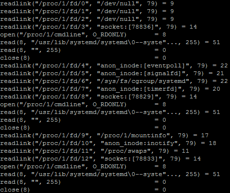
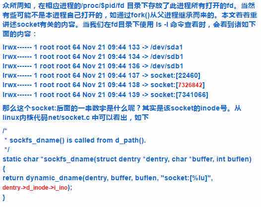
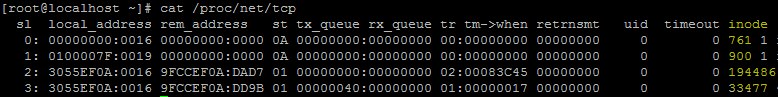

最近项目需要监测多个进程的TCP流量。Linux有很多网络监测工具，不过大部分都是system level级别的，没法精确到进程级别的。后来查到有一个叫做nethogs的工具，能够实时监测各个进程的网络流量，于是对其工作原理很感兴趣，也就有了这篇博客。
当时源码编译安装nethogs的时候，就说需要安装libpcap，我敏锐的意识到netbogs应该是通过网络抓包的方式来分析网络流量的。但是呢，抓到了数据包之后，如何得知该数据包归属于那个进程呢？学过TCP/IP肯定知道，这是通过连接四元组（源IP，源port，目的IP，目的port）区分的。那么就需要得知连接四元组与进程号（pid）的对应关系。
虽然我很清楚kernel是知道这个映射的，但是貌似没有提供直接的接口。于是我通过strace分析了nethogs是如何得到这个映射关系的。
strace -o log.txt nethogs
一旦进入nethogs的画面就Ctrl+C结束进程，然后查看log.txt文件：


可以看到，nethogs貌似在遍历所有的/proc/<pid>/fd/<fd_no>文件，对他们调用readlink()。而且神奇的是，很多readlink()的返回是“socket:[数字]”的形式。这引起了我的注意。于是我去查相关资料：

原来中括号里面的数字是inode号。那么遍历/proc/<pid>/fd/<fd_no>文件，就能得知所有socket的inode到pid的映射了。那么还差一步——TCP四元组到inode的映射。于是继续查看log.txt，发现

于是我又去查看了/proc/net/tcp文件：

在/proc/net/tcp里面，每一行就是一个TCP连接，记录了本地地址、远程地址和inode号。于是连接四元组与inode的映射也能建立起来了~哦，忘记说了，local_address和rem_address的解析方式是这样的：比如3055EF0A:0016，那么就是10.239.85.48:22。也就是每两个十六进制码对应一个十进制数。
所以建立TCP四元组到pid的映射表的代码如下：
import os,re
def refresh_map():
map_inode_pid={}
regex=re.compile('^\\d+$')
dirs=os.listdir('/proc')
for d in dirs:
if regex.match(d):
pid=int(d)
fds=os.listdir('/proc/%s/fd' % d)
for f in fds:
try:
link=os.readlink('/proc/%s/fd/%s' % (d,f))
except:
continue
if link.startswith('socket:'):
inode=int(link[8:-1])
map_inode_pid[inode]=pid
map_addr_inode={}
fd=open('/proc/net/tcp')
lines=fd.readlines()
fd.close()
for line in lines[1:]:
items=line.split()
local=to_normal_addr_format(items[1])
remote=to_normal_addr_format(items[2])
address='%s-%s' % (local,remote)
inode=int(items[9])
map_addr_inode[address]=inode
map_addr_pid={}
for addr,inode in map_addr_inode.items():
try:
pid=map_inode_pid[inode]
except:
continue
map_addr_pid[addr]=pid
return map_addr_pid
def to_normal_addr_format(addr):
ip,port=addr.split(':',2)
ip='.'.join([str(int(ip[i:i+2],16)) for i in range(0,len(ip),2)][::-1])
port=int(port,16)
return '%s:%d' % (ip,port)
接下来就是抓包。本来以为抓包会是最最复杂的部分，没想到python对libpcap的封装非常的棒，只需要用pip安装pcap（但是很遗憾，pcap目前只支持python2.7）和dpkg就可以了（当然，系统本身要安装好libpcap），直接来看一个小例子：

封装后的最终代码如下：
import os
import re
import pcap
import dpkt
import threading
import time
import copy
class Net:
#params:
# dev: the interface to be monitored, such as eth0
# interval: the interval in seconds that refresh the map ( tcp connection=> pid )
def __init__(self,dev,interval):
self.__dev=dev
self.__interval=interval
self.__pcap=pcap.pcap(dev)
self.__refresh_map()
self.__proc_traffic={}
self.__thread_map=threading.Thread(target=self.__thread_map_func)
self.__thread_map.setDaemon(True)
self.__thread_map.start()
self.__thread_cap=threading.Thread(target=self.__thread_cap_func)
self.__thread_cap.setDaemon(True)
self.__thread_cap.start()
self.__fd=open('/proc/net/dev')
def __del__(self):
self.__thread_map.stop()
self.__thread_cap.stop()
self.__fd.close()
def __refresh_map(self):
map_inode_pid={}
regex=re.compile('^\\d+$')
dirs=os.listdir('/proc')
for d in dirs:
if regex.match(d):
pid=int(d)
fds=os.listdir('/proc/%s/fd' % d)
for f in fds:
try:
link=os.readlink('/proc/%s/fd/%s' % (d,f))
except:
continue
if link.startswith('socket:'):
inode=int(link[8:-1])
map_inode_pid[inode]=pid
map_addr_inode={}
fd=open('/proc/net/tcp')
lines=fd.readlines()
fd.close()
for line in lines[1:]:
items=line.split()
local=self.__to_normal_addr_format(items[1])
remote=self.__to_normal_addr_format(items[2])
address='%s-%s' % (local,remote)
inode=int(items[9])
map_addr_inode[address]=inode
map_addr_pid={}
for addr,inode in map_addr_inode.items():
try:
pid=map_inode_pid[inode]
except:
continue
map_addr_pid[addr]=pid
self.__map_addr_pid=map_addr_pid
def __to_normal_addr_format(self,addr):
ip,port=addr.split(':',2)
ip='.'.join([str(int(ip[i:i+2],16)) for i in range(0,len(ip),2)][::-1])
port=int(port,16)
return '%s:%d' % (ip,port)
def __thread_map_func(self):
while True:
self.__refresh_map()
time.sleep(self.__interval)
def __thread_cap_func(self):
for cap_time,cap_raw in self.__pcap:
frame=dpkt.ethernet.Ethernet(cap_raw)
if isinstance(frame.data,dpkt.ip.IP):
packet=frame.data
src_ip='.'.join([str(ord(d)) for d in list(packet.src)])
dst_ip='.'.join([str(ord(d)) for d in list(packet.dst)])
if isinstance(packet.data,dpkt.tcp.TCP):
datagram=packet.data
src_port=datagram.sport
dst_port=datagram.dport
src='%s:%d' % (src_ip,src_port)
dst='%s:%d' % (dst_ip,dst_port)
try:
pid=self.__map_addr_pid['%s-%s' % (src,dst)]
direction='send'
except:
try:
pid=self.__map_addr_pid['%s-%s' % (dst,src)]
direction='recv'
except:
continue
if not self.__proc_traffic.has_key(pid):
traffic=[0,0,0,0]
self.__proc_traffic[pid]=traffic
else:
traffic=self.__proc_traffic[pid]
if direction=='send':
traffic[0]+=1
traffic[1]+=len(datagram.data)
else:
traffic[2]+=1
traffic[3]+=len(datagram.data)
#network traffic of the network interface
# return (send packets, send bytes, recv packets, recv bytes)
def traffic(self):
self.__fd.seek(0)
lines=self.__fd.readlines()
for line in lines:
items=line.split()
if items[0][:-1]==self.__dev:
recv_bytes=int(items[1])
recv_packets=int(items[2])
send_bytes=int(items[9])
send_packets=int(items[10])
return send_packets,send_bytes,recv_packets,recv_bytes
#network traffic of given process,
# return (send packets, send bytes, recv packets, recv bytes)
def proc_traffic(self,pid):
return self.__proc_traffic[pid] if self.__proc_traffic.has_key(pid) else (0,0,0,0)
#network traffic of all processes that have sent or received packets
# return dict { pid = > (send packets, send bytes, recv packets, recv bytes) }
def proc_traffic_all(self):
return copy.deepcopy(self.__proc_traffic)